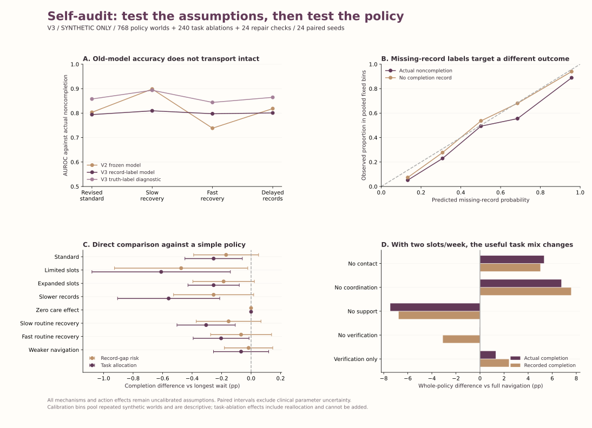

本轮修复两项流程错误，并重做标签、机制和策略效益检验。保留 V1/V2 原始文件及校验值；V3 是一个明确的新版本。共完成 768 个主策略世界、240 个任务消融世界、24 个修复对照，合计 1,032 次评估。另外 192 次容量诊断回放及 24 次同种子机制运输对照不算新增独立证据。
| 编号 | 问题与证据 | 修正与检验 |
|---|---|---|
| A1 | 内部预约已过、没有取消/未到诊和完成记录时，旧 choose_action 返回无任务；有支持需求时还可能继续安排支持 | 预约过期至少 7 天先核实记录；构造用例验证不会把核实当作检查完成 |
| A2 | 只要曾经未到诊，旧 stage 会把后来取消后的待重约仍归成未到诊 | 按最后发生且已收到的事件归类；乱序回传回归用例 |
| A3 | 被阻断流程通常永久停住，外院预约保证完成，导致标签过于可预测 | 增加自然恢复和外院未完成回流，固定慢/快恢复压力测试；不调参追高分 |
| A4 | 用隐藏真值训练时，默认拿到了现实里可能缺失的结局 | 实际政策模型只以第 180 天记录标签训练/选择；同时对两个结局评分；真值模型仅作诊断 |
| A5 | 高 AUROC 和相对常规流程增益不能回答是否值得用复杂排序 | 与等待最久直接配对；报告工时；任务消融检验整套政策变化 |
在保持旧机制的 12 个固定种子里，只开关 A1/A2 修复，记录完成率平均变化为 +1.56 个百分点。该对照单列于 fix_only_comparison.csv，不把机制修改后的变化全部归因于代码修复。V2 的旧数据和结论仅作为版本记录保留，当前看板使用 V3。V3 开发中还修正了外院失败转回内部后误沿用外院记录丢失标记的问题，保持参数和种子不变完整重跑；细节见 REVISIONS.md。
仍从 5,000 人 V1 母队列取 246 个阳性入组/人口模板，重新生成其阳性后轨迹，并延长到每人完整 180 天。每个 seed 是一个共享容量的世界，重复模板不是新患者。预测仅使用收到的记录；发生时间与可用时间分开。即时共享排班接口仍是明确假设。
训练 12 个世界（3001–3012），验证 4 个（3101–3104），主评估 24 个（4001–4024），互不重叠。10,011 条开发时点记录来自同世界患者的重复观察；不能当独立样本。两个候选固定为正则化 Logistic 与 120 树随机森林。以验证世界第 60 天的记录标签 Brier 选择，冻结后评估；没有用测试结果挑参数。选中 Random forest。先前 V2 模型及新真值标签诊断模型也冻结；后者从不参与任务分配。
记录标签为“第 180 天仍未收到及时完成证据”，真实标签为“第 180 天实际未完成”。一位已经做过检查却未回传的人，前者为 1、后者为 0；这不是把未来真值放进特征，而是标签可获得性的差别。模型对其本来目标的偏差和对另一个目标的偏差必须分开解释。
默认常规恢复概率 0.04/周，外院原预约完成概率 0.80，导航照护推进基础概率 0.85 乘 0.50；联系概率、资格和最多三次任务另有限制。所有参数未做临床标定。按世界配对的 95% t 区间不涵盖机制参数、真实人群或临床效应不确定性。
| 策略 | 真实完成 | 已收到记录 | 增量导航小时/世界 | 与等待最久的真实完成差（百分点） |
|---|---|---|---|---|
| 等待最久优先 | 76.5% | 73.5% | 115.7 | +0.00 [+0.00, +0.00] |
| 记录缺口风险优先 | 76.3% | 73.3% | 113.8 | -0.17 [-0.39, +0.05] |
| 任务分配 | 76.2% | 73.2% | 113.8 | -0.25 [-0.45, -0.06] |
| 条件 | 常规完成 | 等待最久完成 | 风险优先减等待最久（百分点） | 任务分配减等待最久（百分点） |
|---|---|---|---|---|
| 检查容量紧张 | 47.8% | 46.5% | -0.47 [-0.93, -0.02] | -0.61 [-1.08, -0.14] |
| 检查容量充足 | 57.5% | 76.4% | -0.19 [-0.39, +0.02] | -0.25 [-0.43, -0.08] |
| 记录延迟 | 57.4% | 75.8% | -0.25 [-0.53, +0.02] | -0.56 [-0.91, -0.21] |
| 零照护作用 | 57.4% | 57.4% | +0.00 [+0.00, +0.00] | +0.00 [+0.00, +0.00] |
| 常规恢复慢 | 49.6% | 73.9% | -0.15 [-0.37, +0.07] | -0.30 [-0.50, -0.11] |
| 常规恢复快 | 66.4% | 79.1% | -0.07 [-0.27, +0.14] | -0.20 [-0.39, -0.01] |
| 导航作用更弱 | 57.4% | 68.2% | -0.02 [-0.18, +0.15] | -0.07 [-0.25, +0.12] |
零照护作用条件下，每位患者的真实检查日期在四策略间完全一致；核实记录仍可能改变记录完成率。没有把记录变化误计为新增检查。不同策略共享预算上限，不保证使用相同分钟；当前结果不是同成本下的纯排序效应。
以下以完整等待最久导航为对照。负数表示去掉该任务后完成率降低。每个差值包含空出工时的再分配和共享容量竞争；不是单个任务的纯因果效应，不可相加。
| 场景 | 政策改变 | 真实完成差及区间（百分点） | 记录完成差（百分点） | 导航小时差 |
|---|---|---|---|---|
| 恢复与不确定性 | 去掉转诊/预约协调 | -13.52 [-14.38, -12.65] | -13.21 | -63.6 |
| 恢复与不确定性 | 去掉准备/交通支持 | -0.93 [-1.22, -0.65] | -0.75 | -14.7 |
| 恢复与不确定性 | 去掉记录核实 | -0.05 [-0.16, +0.05] | -3.83 | -3.1 |
| 恢复与不确定性 | 只保留核实 | -19.05 [-19.96, -18.15] | -18.72 | -112.3 |
| 检查容量紧张 | 去掉联系 | +5.32 [+4.07, +6.56] | +5.01 | -26.6 |
| 检查容量紧张 | 去掉转诊/预约协调 | +6.76 [+4.69, +8.82] | +7.57 | -68.7 |
| 检查容量紧张 | 去掉准备/交通支持 | -7.45 [-8.79, -6.11] | -6.76 | -24.7 |
| 检查容量紧张 | 去掉记录核实 | -0.02 [-0.33, +0.29] | -3.08 | -3.2 |
| 检查容量紧张 | 只保留核实 | +1.30 [-1.15, +3.75] | +2.41 | -126.4 |
标准资源下，去掉转诊/预约协调的损失最大，联系次之；去掉核实主要损害记录完整率。容量紧张时排序不同：不做部分需求推进，可能减少队列竞争；不做准备/交通支持，则可能让有限名额更多消耗在未到诊上。不能把这种模拟条件下的结果解释为应减少真实患者的就医机会。
看到紧张容量条件的零/负增益后，另做同种子回放，追踪预约等待、未到诊占用和第 180 天排在窗口外的数量。这是事后机制诊断，不是新增独立证据，也没有用它来重新优化模型或策略。
| 条件 | 政策 | 180 天真实完成人数 | 全世界期间内部检查数 | 全期间未到诊占用 | 全期间空余名额 | 平均预约等待天数 | 第 180 天预约仍在窗口外人数 |
|---|---|---|---|---|---|---|---|
| standard | oldest_first | 188.1 | 172.1 | 31.4 | 188.5 | 15.2 | 1.2 |
| standard | no_coordination | 154.9 | 155.0 | 26.9 | 210.2 | 14.9 | 3.0 |
| standard | no_support | 185.8 | 169.9 | 40.7 | 181.5 | 15.6 | 1.2 |
| tight_capacity | usual_care | 117.5 | 124.5 | 27.8 | 43.8 | 70.0 | 31.5 |
| tight_capacity | oldest_first | 114.3 | 141.3 | 22.2 | 32.5 | 113.8 | 83.8 |
| tight_capacity | no_coordination | 130.9 | 141.2 | 19.9 | 35.0 | 74.0 | 34.0 |
| tight_capacity | no_support | 96.0 | 126.9 | 28.8 | 40.2 | 131.4 | 102.5 |
资源占用按整个世界运行期统计，可能包含个人第 180 天之后的检查；主终点仍按个人第 180 天截断，两者不可混作分母。诊断中的未到诊只计内部日历；外院失败单列于逐人数据。
calibration_bins.csv 同时保留固定五个概率分箱中预测值、真实未完成率和记录缺口率。图中的点汇集模拟世界，只用于描述，不给按病例独立计算的置信区间。所有预测指标按世界汇总。
未绘制宣称临床收益的决策曲线：本任务有共享容量、不同成本的多种行动和患者间干扰，尚未确定真实收益/伤害权重；普通二元风险阈值曲线不能代替这次资源政策评估。文献方法强调分别检验校准和决策用途：BMJ 预测模型验证方法。导航随机试验支持研究这一方向，不提供本模拟参数的真实性证明：Coronado 等。
导航实验只在第 30–150 天新增任务，因此不覆盖更晚完成后的全部记录核实工作；真实闭环仍需延续到检查和计划证据齐全。
仍未解决：真实标签核实、当地流程/容量/行动耗时标定、实际导航行为、死亡/转出/重复筛查、主动政策下风险模型校准、患者偏好、临床有效性和经济价值。人口特征不参与障碍生成或排序，分组输出不能证明真实差距或公平。模型间差值也不能据此解释为记录缺失的纯因果作用。
下一步真实验证应先做：抽样核实外院与内部记录；量测实际队列、取消和未到诊；观察任务耗时与人工接受率；在获批环境做只读影子试点。优先验证“缺口是否识别正确”和“容量是否支持下一步行动”，再谈模型能否带来增益。
运行 scripts/simulation_v3/experiment_v3.py，再运行 capacity_diagnostics.py、transport_diagnostic.py、report_v3.py。旧 V2 复现入口独立保留。前端读取冻结结果，切换场景不会现场训练或自动联系患者。